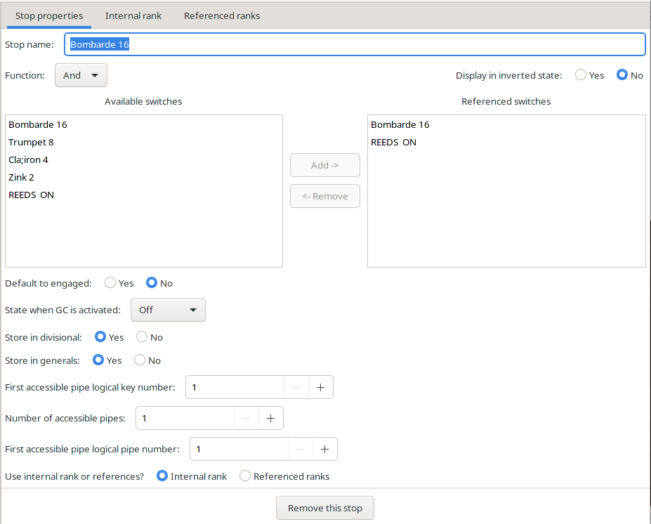

Stops are created from the window for its associated manual. The stop appears in the object tree subsidiary to the manual.
The stop parameter window is shown here:

Notice that this window is unique in that it has three tabs at the top of the window
Function can be Input or one of the logical elements such as And. If a logical element is chosen, one or more switches must be added as referenced switches. If Input is chosen, the switch is activated by its GUI element.
First Accessible Pipe Logical Key Number (integer 1-128, required) The key number on the manual of the first accessible pipe.
Number Of Accessible Pipes (integer 1 - 192, required) Number of pipes, that are playable from the manual starting from the first accessible pipe.
First Accessible Pipe Logical Pipe Number (integer 1 - 192, required if using an internal rank) The number of the first pipe accessible from the manual. If using referenced ranks, this setting is not necessary.
Use Internal rank or references? Choose one of the two radio buttons. If Internal rank, is chosen you need to create a rank on the internal rank tab shown at the top of the figure above. See Ranks for more information. If Referenced ranks is chosen you need to add previously created ranks to the Referenced ranks column in the Referenced ranks tab shown at the top of the figure above.
Display in inverted state (Boolean, default: false) If true, off is displayed as on and on as off.
Default to engaged (Boolean, required) State of the button after loading the organ into GrandOrgue
State when GC activated ( default: implementation defined) State of the button after pressing GC. - no change, off or on.
Store in divisional (Boolean, default: dependent on various settings) Determines, if the button should be stored in divisionals without FULL. (see GrandOrgue help for FULL discussion)
Store in generals (Boolean, default: dependent on various settings) Determines, if the button should be stored in generals without FULL.